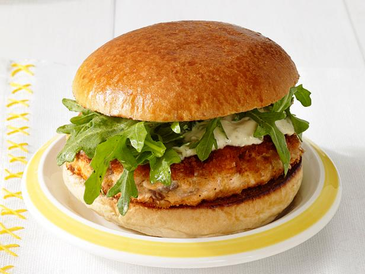

Salmon Burger

This is reminescent of a salmon burger that was made at burger lounge in Hillcrest San Diego until a few years ago. Shame they got rid of it
but the recipe is very simple, they salmon is just hard to grind.
Ingridients:
- Ground Salmon
- 1 tsp paprika
- 1 tsp fresh basil
- 1 tps sea salt
- 1 tsp virgin olive oil
Steps:
- Preheat oil in skillet on high heat
- Mix all ingridients together
- Flatten into patty shape
- Grill on skillet for 3 minutes each side or until sear is realized